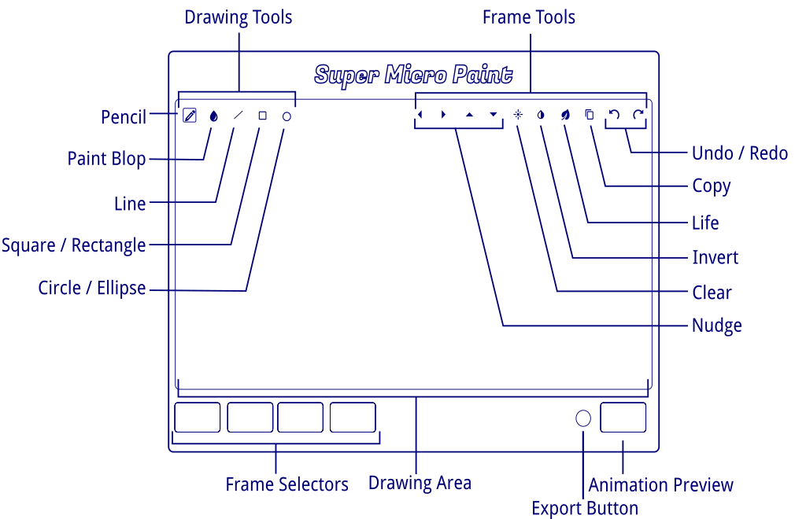

Super Micro Paint
Intro
Welcome to the micro world! Create micro drawings on the go! Bring your drawings to life with four fantastic frames of action! Save your favorite creations to your Personal Computer!
Diagram
Drawing Tools
- Start drawing on white pixels to draw with black pixels.- Start drawing on black pixels to draw with white pixels.
- Pencil - Touch in the Drawing Area to draw. You can also drag.
- Paint Blop - Touch in the Drawing Area to fill an enclosed region.
- Line - Drag your finger to draw a straight line.
- Square / Rectangle - Drag your finger from corner to corner to draw rectangle.
- Circle / Ellipse - Drag your corne from center to circumference to draw ellipse.
Frame Tools
- Nudge - Touch a nudge arrow to move the entire drawing one pixel in the direction indicated by the arrow. The drawing will wrap around the edges.
- Clear - Erase the entire frame.
- Invert - Invert the colors of the drawing.
- Life - The miracle of life.
- Copy - Touch this tool once to enter copy mode. Then touch a frame selector to copy the current frame to. Touch the copy tool again to cancel.
- Undo - Touch to fix your mistake.
- Redo - Touch to fix your mistaken undo.